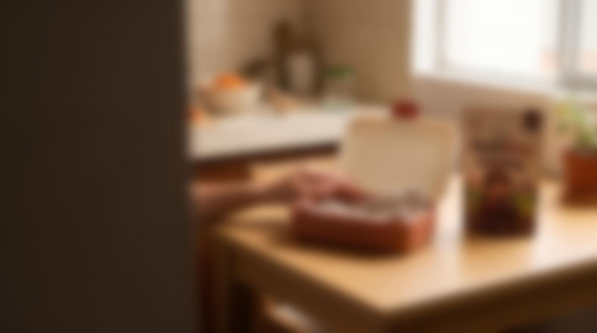
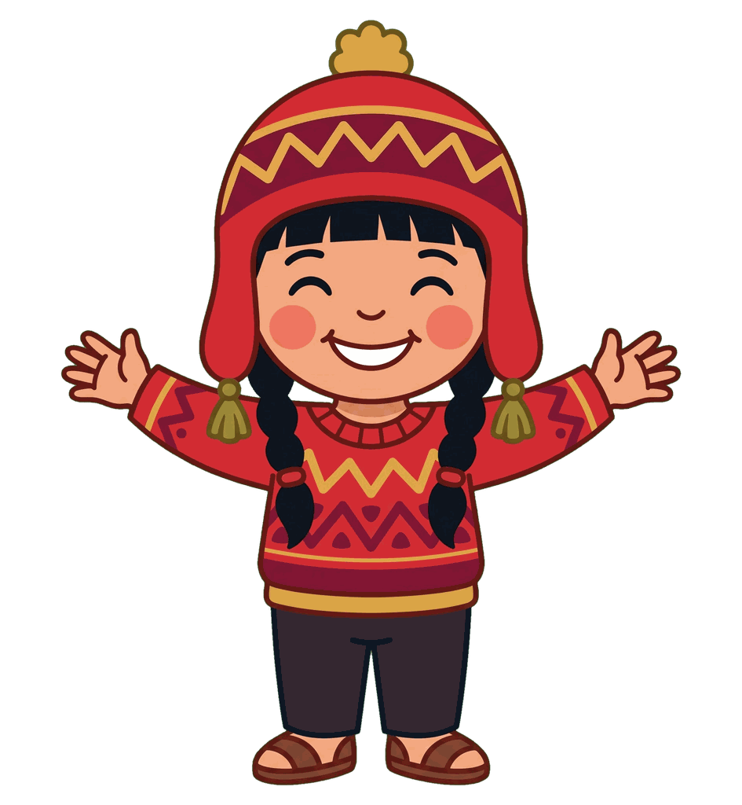

Investigación cualitativa · Marca · Mercado · Promoción · Lanzamiento
Del mercado meta al lanzamiento
AndiBite, el mini brownie con hierro de verdad para la lonchera.
Grupo 2: Diana Ayoso · Patricia Cárdenas · Adela Robles · Angie Blas · Carlos Inga
Desarrollo y Lanzamiento de Nuevos Productos · UPN Los Olivos · Prof. Paola Zevallos · Noviembre de 2026